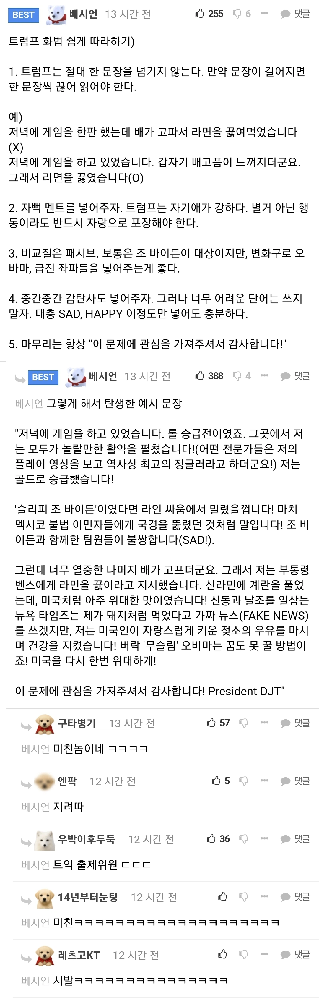
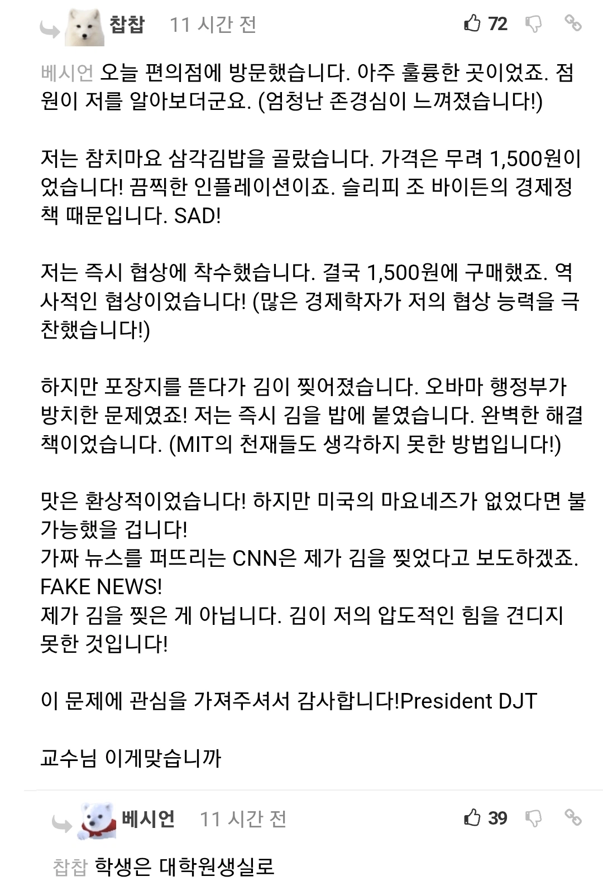

백악관은 당장 이사람을 (일반세계와 트럼프를 이어주는) 통역사로 채용해야 한다

감탄사 넣는게 진짜 웃기네 ㅋㅋㅋㅋ
정치인 화법이긴 하네
왜 대통령2번이나 한지 알거같음
상대가
힐러리
해리스여서 먹은듯
1,4. 가독성 상승, 쉬운 단어로 다수의 저학력 MAGA 지지층도 쉽게 읽음
2,3. 허수아비 패면서 자기 올려치기
5. 각운
트럼프 평소 트윗량보면 대충 주제만 자기가 주고 트럼프어로 변환해서 올려주는 팀이 있는거겠지?
SAD!!


난 창의력이 부족해서 못할듯
내가 ~를 했기에 미국은 다시 위대해졌습니다
바이든과 오바마가 ~를 해서 최악으로 된 ~것을 내가 ~를 했기 때문에 미국은 다시 위대해졌습니다.
저 좀 짱인듯?
오타쿠 말투랑 뭐가 다른 거야 ㅋㅋㅋ
오타쿠는 지가 하고싶은 소리만 하고
정치인은 지지자가 듣고싶은 소리만 함
미친ㅋㅋㅋㅋ
트익 ㅋㅋㅋ
1500원에서 협상한 결과가 1500원이라니 정말 역사적이구만
ㄹㅇ 지금 이란 협상 같네
ㅋㅋㅋㅋㅋ
미친놈인가 ㅋㅋ